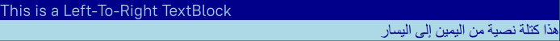
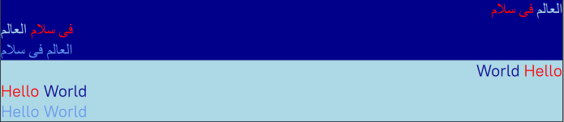
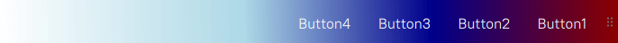
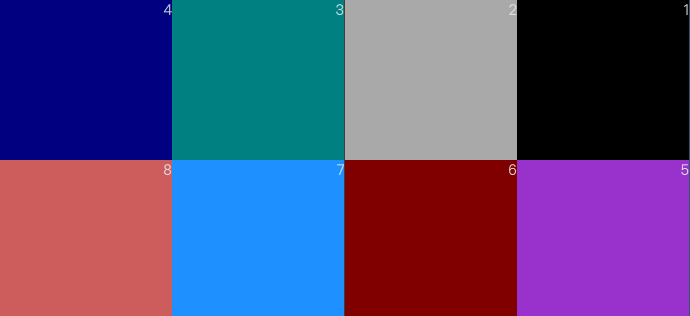
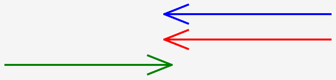
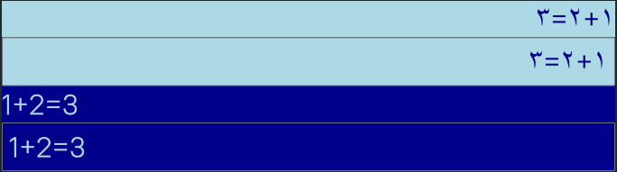

Bidirectional Features
NoesisGUI has many features that support rapid development of bidirectional content, for example, mixed left to right and right to left data in the same document. At the same time, NoesisGUI creates an excellent experience for users who require bidirectional features such as Arabic and Hebrew speaking users.
The following sections explain many bidirectional features together with examples illustrating how to achieve the best display of bidirectional content.
NOTE
This tutorial is based on Bidirectional Features in WPF Overview
FlowDirection
The basic property that defines the content flow direction in NoesisGUI is FlowDirection. This property can be set to one of two enumeration values, LeftToRight and RightToLeft. The property is available to all elements that inherit from FrameworkElement. An element within the tree will inherit the FlowDirection from its container.
The following examples set the flow direction of TextBlock elements.
<Page xmlns="http://schemas.microsoft.com/winfx/2006/xaml/presentation">
<StackPanel>
<TextBlock Background="DarkBlue" Foreground="LightBlue"
FontSize="20" FlowDirection="LeftToRight">
This is a Left-To-Right TextBlock
</TextBlock>
<TextBlock Background="LightBlue" Foreground="DarkBlue"
FontSize="20" FlowDirection="RightToLeft">
هذا كتلة نصية من اليمين إلى اليسار
</TextBlock>
</StackPanel>
</Page>
Span Elements
The Span element work as a boundary separator between texts with different flow direction. Even Span elements with the same flow direction are considered to have different bidirectional scopes with means that the Span element are ordered in the container's FlowDirection, only the content within the Span element follows the FlowDirection of the Span.
The following example shows how to use the Span and Run elements combined with FlowDirection.
<Page xmlns="http://schemas.microsoft.com/winfx/2006/xaml/presentation">
<StackPanel Margin="1">
<StackPanel Background="DarkBlue">
<TextBlock FontSize="20" FlowDirection="RightToLeft">
<Run FlowDirection="LeftToRight" Foreground="LightBlue">العالم</Run>
<Run FlowDirection="LeftToRight" Foreground="Red">فى سلام</Run>
</TextBlock>
<TextBlock FontSize="20" FlowDirection="LeftToRight">
<Run FlowDirection="RightToLeft" Foreground="LightBlue">العالم</Run>
<Run FlowDirection="RightToLeft" Foreground="Red">فى سلام</Run>
</TextBlock>
<TextBlock FontSize="20" Foreground="CornflowerBlue">العالم فى سلام</TextBlock>
</StackPanel>
<StackPanel Background="LightBlue">
<TextBlock FontSize="20" FlowDirection="RightToLeft">
<Span Foreground="Red" FlowDirection="LeftToRight">Hello</Span>
<Span Foreground="DarkBlue" FlowDirection="LeftToRight">World</Span>
</TextBlock>
<TextBlock FontSize="20" FlowDirection="LeftToRight">
<Span Foreground="Red" FlowDirection="RightToLeft">Hello</Span>
<Span Foreground="DarkBlue" FlowDirection="RightToLeft">World</Span>
</TextBlock>
<TextBlock FontSize="20" Foreground="CornflowerBlue">Hello World</TextBlock>
</StackPanel>
</StackPanel>
</Page>
In the TextBlock elements in the sample, the Span elements are laid our according to the FlowDirection of their parents, but the text within each Span element flows according to its own FlowDirection. This is applicable to Latin and Arabic or any other language.
Non-text Elements
FlowDirection defines not only how texts flows in a textual element but also the flow direction of almost every other UI element. The following example shows a ToolBar that uses a horizontal LinearGradientBrush to draw its background. After setting the FlowDirection to RightToLeft, not only the ToolBar buttons are arranged from right to left, but even the LinearGradientBrush realigns its offset to flow from right to left.
<Page xmlns="http://schemas.microsoft.com/winfx/2006/xaml/presentation">
<ToolBar FlowDirection="RightToLeft" Height="50" DockPanel.Dock="Top">
<ToolBar.Background>
<LinearGradientBrush StartPoint="0,0.5" EndPoint="1,1">
<LinearGradientBrush.GradientStops>
<GradientStop Color="DarkRed" Offset="0" />
<GradientStop Color="DarkBlue" Offset="0.3" />
<GradientStop Color="LightBlue" Offset="0.6" />
<GradientStop Color="White" Offset="1" />
</LinearGradientBrush.GradientStops>
</LinearGradientBrush>
</ToolBar.Background>
<Button FontSize="12" Foreground="White" Margin="10">Button1</Button>
<Button FontSize="12" Foreground="White" Margin="10">Button2</Button>
<Button FontSize="12" Foreground="White" Margin="10">Button3</Button>
<Button FontSize="12" Foreground="White" Margin="10">Button4</Button>
</ToolBar>
</Page>
A UniformGrid will normally lay out its child elements from left to right, starting in the first row (top to bottom, left to right). You can reverse the left-to-right behavior by using the FlowDirection property.
<Page xmlns="http://schemas.microsoft.com/winfx/2006/xaml/presentation">
<UniformGrid Rows="2" Columns="4" FlowDirection="RightToLeft">
<Label Content="1" Background="Black"/>
<Label Content="2" Background="DarkGray"/>
<Label Content="3" Background="Teal"/>
<Label Content="4" Background="Navy"/>
<Label Content="5" Background="DarkOrchid"/>
<Label Content="6" Background="Maroon"/>
<Label Content="7" Background="DodgerBlue"/>
<Label Content="8" Background="IndianRed"/>
</UniformGrid>
</Page>
FlowDirection Exceptions
There are a few cases where FlowDirection does not behave as expected. This section covers two of these exceptions.
Image
Unlike other UI elements, an Image does not inherit the FlowDirection from the container. However, if the FlowDirection is set explicitly to RightToLeft, an Image is displayed flipped horizontally. This is implemented as a convenient feature for developers of bidirectional content; because is some cases, horizontally flipping the image produces the desired effect.
<StackPanel xmlns="http://schemas.microsoft.com/winfx/2006/xaml/presentation"
Orientation="Horizontal" FlowDirection="RightToLeft">
<Image Source="House.jpg" Margin="5"/>
<Image Source="House.jpg" Margin="5" FlowDirection="RightToLeft"/>
</StackPanel>
Paths
In addition to an Image, another interesting element is Path. A Path is an object that can draw a series of connected lines and curves. It behaves in a manner similar to an Image regarding its FlowDirection; for example its RightToLeft FlowDirection is a horizontal mirror of its LeftToRight one. However, unlike an Image, Path inherits its FlowDirection from the container and one does not need to specify it explicitly.
The following example draws a simple arrow using 3 lines. The first arrow inherits the RightToLeft flow direction from the StackPanel so that its start and end points are measured from a root on the right side. The second arrow which has an explicit RightToLeft FlowDirection also starts on the right side. However, the third arrow has its starting root on the left side. For more information on drawing see LineGeometry and GeometryGroup.
<StackPanel xmlns="http://schemas.microsoft.com/winfx/2006/xaml/presentation"
FlowDirection="RightToLeft">
<Path Stroke="Blue" StrokeThickness="4"
Data="M300,10L350,30M10,30L352,30M300,50L350,30"/>
<Path Stroke="Red" StrokeThickness="4"
Data="M300,10L350,30M10,30L352,30M300,50L350,30"
FlowDirection="RightToLeft"/>
<Path Stroke="Green" StrokeThickness="4"
Data="M300,10L350,30M10,30L352,30M300,50L350,30"
FlowDirection="LeftToRight"/>
</StackPanel>
Setting Language
Setting the right language in your application is crucial for the internal shaping algorithm that applies language-specific behaviors. The language is part of the CultureInfo instance that can be set at initialization time with Noesis::GUI::SetCulture().
// Provides information about a specific culture
struct CultureInfo
{
// The culture name in BCP-47 language tag format
const char* name = "en-US";
// Defines the culturally appropriate format of displaying numbers, currency, and percentage
NumberFormatInfo numberFormat;
};
When the language is not specified, the default language is used, which is "en-US". Be aware that many languages have different names depending on the targeted region, for example, "ar-SA" and "ar-EG" represent two variations of Arabic.
Number Substitution
NoesisGUI supports number substitution by allowing the representation of different cultural shapes for the same digits while keeping the internal storage of these digits unified among different locales, for example number are stored in their well known hexadecimal values, 0x40, 0x41, but displayed according to the selected language.
This allows applications to process numerical values without the need to convert them from one language to another. This is also necessary for other symbols such as comma separators and percentage symbols because they usually accompany numbers in the same document.
Noesis supports this feature that allows more user control over when and how substitution is used. While this feature is designed for any language, it is particularly useful in bidirectional content where shaping digits for a specific language is usually a challenge for application developers because of the various cultures an application might run on.
The digitSubstitution member of the class NumberFormatInfo defines the culturally appropriate format of displaying numbers, currency, and percentage. It takes one of the following DigitShapes enumeration values:
- None: The digit shape is not changed. Full Unicode compatibility is maintained
- NativeNational: The digit shape is the native equivalent of the digits from 0 through 9. ASCII digits from 0 through 9 are replaced by equivalent native national digits.
- Context: The digit shape depends on the previous text in the same output. European digits follow Latin scripts; Arabic-Indic digits follow Arabic text; and Thai digits follow Thai text. This is the default value.
The following example demonstrates using Arabic and English numbers if a NoesisGUI instance running with an Arabic language ("ar-SA") set.
<Page xmlns="http://schemas.microsoft.com/winfx/2006/xaml/presentation">
<StackPanel>
<TextBlock Background="LightBlue" Foreground="DarkBlue"
FontSize="32" FlowDirection="RightToLeft">1+2=3</TextBlock>
<TextBox Background="LightBlue" Foreground="DarkBlue"
FontSize="32" FlowDirection="RightToLeft">1+2=3</TextBox>
<TextBlock Background="DarkBlue" Foreground="LightBlue"
FontSize="32">1+2=3</TextBlock>
<TextBox Background="DarkBlue" Foreground="LightBlue"
FontSize="32">1+2=3</TextBox>
</StackPanel>
</Page>
The FlowDirection is important in this case because setting the FlowDirection to LeftToRight instead yield European digits. If this example is not running on Arabic language, all the digits display as European digits.